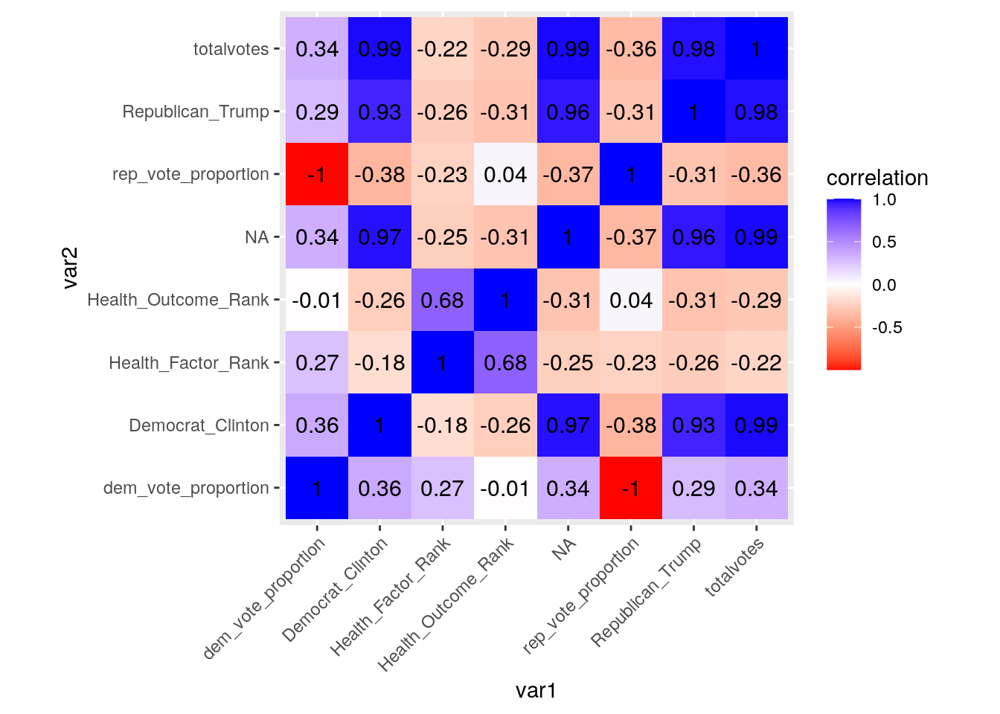
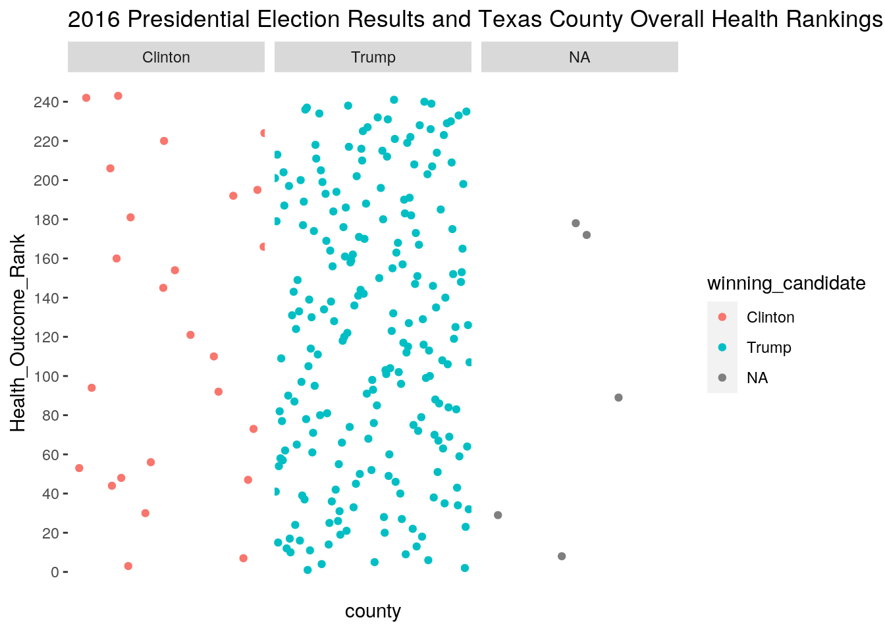
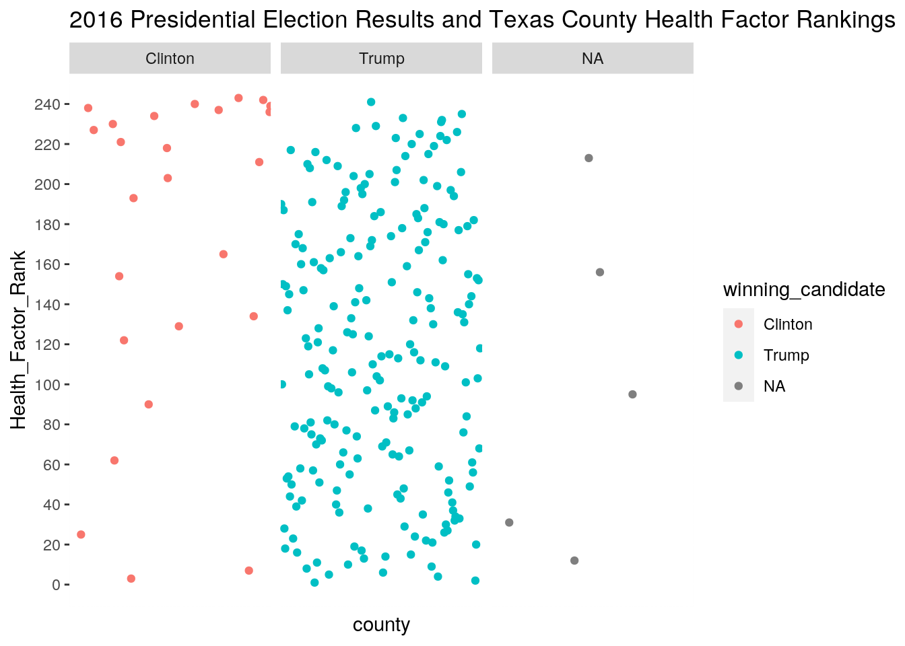
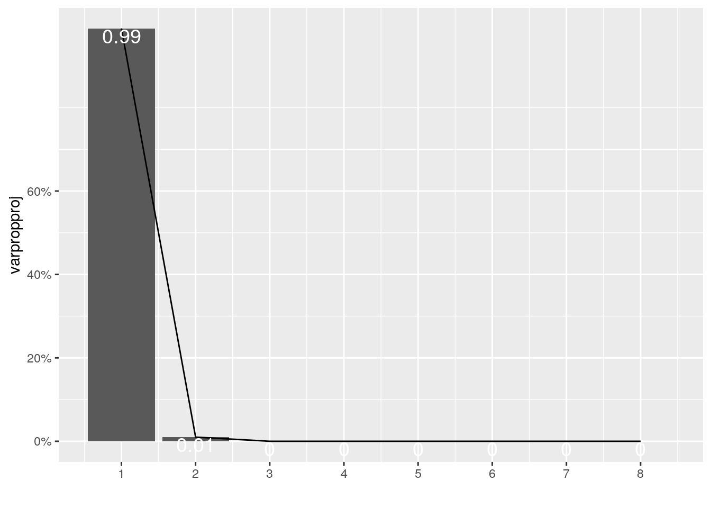
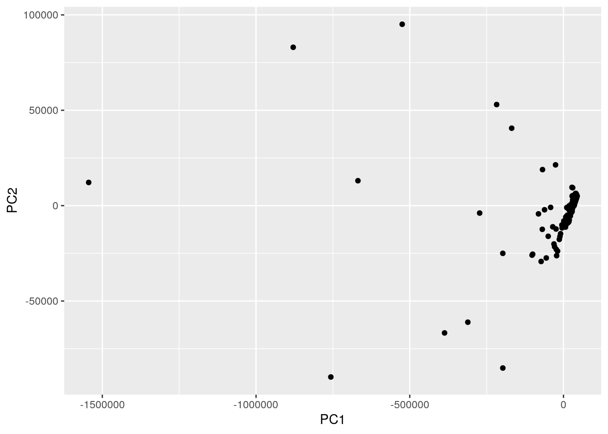

library(tidyverse)
library(cluster)
library(ggplot2)
library(dplyr)
library(readxl)
healthdata<-X2021_County_Health_Rankings_Texas_Data_v1 <- read_excel("2021 County Health Rankings Texas Data - v1.xlsx",
sheet = "Outcomes & Factors Rankings",
col_types = c("text", "text", "text",
"text", "numeric", "text", "numeric"))
votedata<-read.csv("countypres_2000-2016.csv")##Introduction The two data sets I have chosen are Texas county health data and county presidential election data from 2000 to 2016. The election data set contains data for all counties in the U.S. so I will have to narrow it down to just Texas counties. I acquired the health data from countyhealthrankings.org. The data set includes the variables: “county”, “Health Outcomes”, “Health Factors”, and relative rankings for both of the health variables. The “Health Outcomes” were determined by how long people live and how healthy people feel while alive. The “Health Factors” are things that influence the overall health of a county (smoking, obesity, physical inactivity, etc.). I acquired the presidential election data set from the MIT Election Lab website. The data set includes the variables of interest: “county”, “candidate”, “candidatevotes”,“totalvotes”, and “party”. There are a whole host of other variables that I am uninterested in, so those will be removed. I am curious to see if there is any relationship between county party affiliation and overall health outcomes. I expect that rural, red (GOP) counties will have worse health outcomes. I also would not be surprised if there was not any kind of real relationship. These topics are interesting to me because I plan on pursuing medicine and I grew up in a largely conservative, unhealthy community.
tidyhealth<-healthdata %>% select(3,5,7) %>%
rename(
Health_Outcome_Rank = ...5,
Health_Factor_Rank = ...7,
county = ...3
)
tidyhealth<-tidyhealth[-c(1,2), ]
tidyvote<-votedata %>% filter(year==2016) %>% filter(state=='Texas') %>% select(4,7,8,9,10)
tidyvote<-tidyvote%>% select(-2) %>% pivot_wider(names_from = party, values_from=candidatevotes)
tidyvote<-tidyvote%>% rename(
Democrat_Clinton = democrat,
Republican_Trump = republican
)In the above chunk of code I tidied up and reorganized both of the data sets. For the health ranking data I dropped the columns containing the z-scores and the the top two rows. The top two rows were (unnecessary) secondary headings. Then I renamed the column headings. For the election data I had to filter down to one year (I chose the 2016 election) and filter to just Texas counties. Then I dropped the unnecessary columns and pivoted wider to tidy up the data. The final data set just contains county names, total votes, and the number of votes for each candidate/party. I attempted to rename the “NA” column to “Third Party” but I kept getting error messages.
joinedproject<-tidyhealth %>% inner_join(tidyvote, by="county")I used an inner join to join the two data sets. I chose to use the inner join because I did not want any NAs to be introduced. I do not believe that any of the rows were dropped. With the way I have tidied the data sets I think that any of the other joins would have worked just as well.
zscore<-function(x) (x-mean(x, na.rm=T)) / sd(x, na.rm=T)
joinedproject<-joinedproject %>% mutate(dem_vote_proportion=Democrat_Clinton/totalvotes) %>% mutate(rep_vote_proportion=Republican_Trump/totalvotes)
joinedproject %>% summarise(mean(dem_vote_proportion))## # A tibble: 1 x 1
## `mean(dem_vote_proportion)`
## <dbl>
## 1 0.252joinedproject %>% summarise(mean(rep_vote_proportion))## # A tibble: 1 x 1
## `mean(rep_vote_proportion)`
## <dbl>
## 1 0.717joinedproject %>% group_by(Health_Outcome_Rank, Health_Factor_Rank) %>% summarise(dem_vote_proportion)## # A tibble: 253 x 3
## # Groups: Health_Outcome_Rank, Health_Factor_Rank [243]
## Health_Outcome_Rank Health_Factor_Rank dem_vote_proportion
## <dbl> <dbl> <dbl>
## 1 1 1 0.389
## 2 2 2 0.416
## 3 3 3 0.514
## 4 4 5 0.371
## 5 5 6 0.181
## 6 6 4 0.242
## 7 7 7 0.658
## 8 8 12 0.460
## 9 9 24 0.224
## 10 10 16 0.344
## # … with 243 more rowsjoinedproject %>% group_by(Health_Outcome_Rank, Health_Factor_Rank) %>% summarise(rep_vote_proportion)## # A tibble: 253 x 3
## # Groups: Health_Outcome_Rank, Health_Factor_Rank [243]
## Health_Outcome_Rank Health_Factor_Rank rep_vote_proportion
## <dbl> <dbl> <dbl>
## 1 1 1 0.556
## 2 2 2 0.513
## 3 3 3 0.448
## 4 4 5 0.571
## 5 5 6 0.780
## 6 6 4 0.712
## 7 7 7 0.271
## 8 8 12 0.469
## 9 9 24 0.735
## 10 10 16 0.576
## # … with 243 more rowsjoinedproject %>%group_by(Health_Outcome_Rank, Health_Factor_Rank) %>%summarize_if(is.numeric,sum,na.rm=T)## # A tibble: 243 x 8
## # Groups: Health_Outcome_Rank [243]
## Health_Outcome_… Health_Factor_R… totalvotes Democrat_Clinton
## <dbl> <dbl> <int> <int>
## 1 1 1 361419 140624
## 2 2 2 203081 84468
## 3 3 3 262066 134686
## 4 4 5 298645 110890
## 5 5 6 20120 3643
## 6 6 4 39948 9655
## 7 7 7 468720 308260
## 8 8 12 72164 33224
## 9 9 24 204632 45835
## 10 10 16 67211 23121
## # … with 233 more rows, and 4 more variables: Republican_Trump <int>,
## # `NA` <int>, dem_vote_proportion <dbl>, rep_vote_proportion <dbl>joinedproject %>% filter(rep_vote_proportion>dem_vote_proportion)## # A tibble: 226 x 9
## county Health_Outcome_… Health_Factor_R… totalvotes Democrat_Clinton
## <chr> <dbl> <dbl> <int> <int>
## 1 Ander… 201 190 16977 3369
## 2 Andre… 41 100 4943 836
## 3 Angel… 179 150 29911 7538
## 4 Arans… 213 187 10512 2465
## 5 Archer 15 28 4283 394
## 6 Armst… 54 18 1021 70
## 7 Atasc… 82 149 13673 4651
## 8 Austin 58 53 12274 2320
## 9 Bailey 109 137 1793 397
## 10 Bande… 77 54 10218 1726
## # … with 216 more rows, and 4 more variables: Republican_Trump <int>,
## # `NA` <int>, dem_vote_proportion <dbl>, rep_vote_proportion <dbl>joinedproject %>% mutate_if(is.character, as.numeric) %>% arrange(Health_Outcome_Rank) %>% filter(rep_vote_proportion>dem_vote_proportion) %>% select(2,3,8,9)## # A tibble: 226 x 4
## Health_Outcome_Rank Health_Factor_Rank dem_vote_proportion rep_vote_proporti…
## <dbl> <dbl> <dbl> <dbl>
## 1 1 1 0.389 0.556
## 2 2 2 0.416 0.513
## 3 4 5 0.371 0.571
## 4 5 6 0.181 0.780
## 5 6 4 0.242 0.712
## 6 8 12 0.460 0.469
## 7 9 24 0.224 0.735
## 8 10 16 0.344 0.576
## 9 11 11 0.229 0.726
## 10 12 23 0.219 0.741
## # … with 216 more rowsjoinedproject %>% mutate_if(is.character, as.numeric) %>% arrange(Health_Outcome_Rank) %>% filter(rep_vote_proportion<dem_vote_proportion) %>% select(2,3,8,9)## # A tibble: 27 x 4
## Health_Outcome_Rank Health_Factor_Rank dem_vote_proportion rep_vote_proporti…
## <dbl> <dbl> <dbl> <dbl>
## 1 3 3 0.514 0.448
## 2 7 7 0.658 0.271
## 3 30 90 0.540 0.416
## 4 44 62 0.608 0.346
## 5 47 134 0.511 0.433
## 6 48 122 0.691 0.259
## 7 53 25 0.542 0.408
## 8 56 234 0.685 0.280
## 9 73 211 0.743 0.228
## 10 92 165 0.521 0.445
## # … with 17 more rowsjoinedproject<-joinedproject%>%mutate(winning_candidate = case_when(dem_vote_proportion>0.5 ~ "Clinton", rep_vote_proportion>0.5 ~ "Trump"))
joinedproject %>% summarise_if(is.numeric,mean)## # A tibble: 1 x 8
## Health_Outcome_… Health_Factor_R… totalvotes Democrat_Clinton Republican_Trump
## <dbl> <dbl> <dbl> <dbl> <dbl>
## 1 NA NA 35424. 15323. 18496.
## # … with 3 more variables: `NA` <dbl>, dem_vote_proportion <dbl>,
## # rep_vote_proportion <dbl>joinedproject %>% summarise_if(is.numeric,sd)## # A tibble: 1 x 8
## Health_Outcome_… Health_Factor_R… totalvotes Democrat_Clinton Republican_Trump
## <dbl> <dbl> <dbl> <dbl> <dbl>
## 1 NA NA 119624. 64615. 51242.
## # … with 3 more variables: `NA` <dbl>, dem_vote_proportion <dbl>,
## # rep_vote_proportion <dbl>joinedproject %>% summarise_if(is.numeric,zscore)## # A tibble: 253 x 8
## Health_Outcome_… Health_Factor_R… totalvotes Democrat_Clinton
## <dbl> <dbl> <dbl> <dbl>
## 1 1.12 0.966 -0.154 -0.185
## 2 -1.15 -0.312 -0.255 -0.224
## 3 0.810 0.398 -0.0461 -0.120
## 4 1.29 0.923 -0.208 -0.199
## 5 -1.52 -1.33 -0.260 -0.231
## 6 -0.965 -1.48 -0.288 -0.236
## 7 -0.567 0.384 -0.182 -0.165
## 8 -0.908 -0.979 -0.194 -0.201
## 9 -0.184 0.213 -0.281 -0.231
## 10 -0.638 -0.965 -0.211 -0.210
## # … with 243 more rows, and 4 more variables: Republican_Trump <dbl>,
## # `NA` <dbl>, dem_vote_proportion <dbl>, rep_vote_proportion <dbl>joinedproject %>% summarise_if(is.numeric,var)## # A tibble: 1 x 8
## Health_Outcome_… Health_Factor_R… totalvotes Democrat_Clinton Republican_Trump
## <dbl> <dbl> <dbl> <dbl> <dbl>
## 1 NA NA 1.43e10 4175055950. 2625774828.
## # … with 3 more variables: `NA` <dbl>, dem_vote_proportion <dbl>,
## # rep_vote_proportion <dbl>joinedproject %>% summarise_if(is.numeric,sum)## # A tibble: 1 x 8
## Health_Outcome_… Health_Factor_R… totalvotes Democrat_Clinton Republican_Trump
## <dbl> <dbl> <int> <int> <int>
## 1 NA NA 8962382 3876705 4679528
## # … with 3 more variables: `NA` <int>, dem_vote_proportion <dbl>,
## # rep_vote_proportion <dbl>joinedproject %>%group_by(winning_candidate,Health_Outcome_Rank) %>% arrange(Health_Outcome_Rank)## # A tibble: 253 x 10
## # Groups: winning_candidate, Health_Outcome_Rank [244]
## county Health_Outcome_… Health_Factor_R… totalvotes Democrat_Clinton
## <chr> <dbl> <dbl> <int> <int>
## 1 Collin 1 1 361419 140624
## 2 Willi… 2 2 203081 84468
## 3 Fort … 3 3 262066 134686
## 4 Denton 4 5 298645 110890
## 5 Kenda… 5 6 20120 3643
## 6 Rockw… 6 4 39948 9655
## 7 Travis 7 7 468720 308260
## 8 Hays 8 12 72164 33224
## 9 Montg… 9 24 204632 45835
## 10 Brazos 10 16 67211 23121
## # … with 243 more rows, and 5 more variables: Republican_Trump <int>,
## # `NA` <int>, dem_vote_proportion <dbl>, rep_vote_proportion <dbl>,
## # winning_candidate <chr>joinedproject %>% summarise(n_distinct(county))## # A tibble: 1 x 1
## `n_distinct(county)`
## <int>
## 1 253joinedproject %>%filter(winning_candidate=='Trump') %>% summarise(n())## # A tibble: 1 x 1
## `n()`
## <int>
## 1 222joinedproject %>%filter(winning_candidate=='Clinton') %>% summarise(n())## # A tibble: 1 x 1
## `n()`
## <int>
## 1 26joinedproject## # A tibble: 253 x 10
## county Health_Outcome_… Health_Factor_R… totalvotes Democrat_Clinton
## <chr> <dbl> <dbl> <int> <int>
## 1 Ander… 201 190 16977 3369
## 2 Andre… 41 100 4943 836
## 3 Angel… 179 150 29911 7538
## 4 Arans… 213 187 10512 2465
## 5 Archer 15 28 4283 394
## 6 Armst… 54 18 1021 70
## 7 Atasc… 82 149 13673 4651
## 8 Austin 58 53 12274 2320
## 9 Bailey 109 137 1793 397
## 10 Bande… 77 54 10218 1726
## # … with 243 more rows, and 5 more variables: Republican_Trump <int>,
## # `NA` <int>, dem_vote_proportion <dbl>, rep_vote_proportion <dbl>,
## # winning_candidate <chr>The relationship I expected to find between Health Outcome Rank and the winning candidate of a county was not there. Donald Trump received 4679528 of all Texas votes and Hillary Clinton received 3876705. The two healthiest counties (Collin and Williamson) both voted for Donald Trump. Donald Trump won 222 of the 253 counties represented in this data set, and he won the majority of the healthiest counties (7 of the top 10). Hillary Clinton won 26 of the counties represented in the data set.
cormatproj <- joinedproject %>% select_if(is.numeric) %>% cor(use = "pair")
cormatproj %>% as.data.frame %>% rownames_to_column("var1")## var1 Health_Outcome_Rank Health_Factor_Rank totalvotes
## 1 Health_Outcome_Rank 1.000000000 0.6842398 -0.2881571
## 2 Health_Factor_Rank 0.684239795 1.0000000 -0.2192574
## 3 totalvotes -0.288157088 -0.2192574 1.0000000
## 4 Democrat_Clinton -0.257984255 -0.1763062 0.9863301
## 5 Republican_Trump -0.312430863 -0.2608447 0.9778049
## 6 NA -0.305975954 -0.2514338 0.9871297
## 7 dem_vote_proportion -0.009226306 0.2674729 0.3368070
## 8 rep_vote_proportion 0.041667214 -0.2309496 -0.3550727
## Democrat_Clinton Republican_Trump NA dem_vote_proportion
## 1 -0.2579843 -0.3124309 -0.3059760 -0.009226306
## 2 -0.1763062 -0.2608447 -0.2514338 0.267472943
## 3 0.9863301 0.9778049 0.9871297 0.336807028
## 4 1.0000000 0.9300454 0.9749830 0.363414954
## 5 0.9300454 1.0000000 0.9605951 0.288754874
## 6 0.9749830 0.9605951 1.0000000 0.343129609
## 7 0.3634150 0.2887549 0.3431296 1.000000000
## 8 -0.3785785 -0.3097686 -0.3650342 -0.997544168
## rep_vote_proportion
## 1 0.04166721
## 2 -0.23094962
## 3 -0.35507268
## 4 -0.37857854
## 5 -0.30976857
## 6 -0.36503421
## 7 -0.99754417
## 8 1.00000000tidycorproj<-cormatproj %>% as.data.frame %>% rownames_to_column("var1") %>%
pivot_longer(-1,names_to="var2",values_to="correlation")
tidycorproj %>% ggplot(aes(var1,var2, fill=correlation))+geom_tile()+
scale_fill_gradient2(low = "red",mid="white",high = "blue")+
geom_text(aes(label=round(correlation,2)),color = "black", size = 4)+
theme(axis.text.x = element_text(angle = 45, hjust = 1))+
coord_fixed()
joinedproject %>% ggplot(aes(county,Health_Outcome_Rank, color=winning_candidate)) + geom_point(stat="summary")+facet_wrap(~winning_candidate)+
theme(axis.text.x = element_blank(),axis.ticks.x = element_blank())+
scale_y_continuous(breaks = scales::pretty_breaks(n = 10))+
ggtitle("2016 Presidential Election Results and Texas County Overall Health Rankings")
joinedproject %>% ggplot(aes(county,Health_Factor_Rank, color=winning_candidate)) + geom_point(stat="summary")+facet_wrap(~winning_candidate)+
theme(axis.text.x = element_blank(),axis.ticks.x = element_blank())+
scale_y_continuous(breaks = scales::pretty_breaks(n = 10))+
ggtitle("2016 Presidential Election Results and Texas County Health Factor Rankings")
I decided to visualize the data as scatter plots because it was the easiest on the eyes. I removed the county names from the x-axis because regardless of the manipulations I attempted they were illegible. The y-axis shows the health outcome rank of the county’s and as such, the lower the score the healthier the county. As shown in the graphs there is not much of a correlation between county election results and the overall health of the county.
proj_nums <- joinedproject %>% select_if(is.numeric)
rownames(proj_nums) <- joinedproject$county
proj_nums<-na.omit(proj_nums)
proj_pca <- princomp(proj_nums)
summary(proj_pca, loadings=T)## Importance of components:
## Comp.1 Comp.2 Comp.3 Comp.4
## Standard deviation 1.472995e+05 1.534610e+04 1.116577e+03 8.330488e+01
## Proportion of Variance 9.892059e-01 1.073692e-02 5.684094e-05 3.163915e-07
## Cumulative Proportion 9.892059e-01 9.999428e-01 9.999996e-01 9.999999e-01
## Comp.5 Comp.6 Comp.7 Comp.8
## Standard deviation 3.886776e+01 1.885538e-01 6.156030e-03 1.518300e-03
## Proportion of Variance 6.887523e-08 1.620893e-12 1.727768e-15 1.050991e-16
## Cumulative Proportion 1.000000e+00 1.000000e+00 1.000000e+00 1.000000e+00
##
## Loadings:
## Comp.1 Comp.2 Comp.3 Comp.4 Comp.5 Comp.6 Comp.7 Comp.8
## Health_Outcome_Rank 0.717 0.697
## Health_Factor_Rank 0.697 -0.717
## totalvotes -0.827 -0.251 0.500
## Democrat_Clinton -0.441 0.677 0.312 -0.500
## Republican_Trump -0.346 -0.734 0.302 -0.500
## NA -0.865 -0.500
## dem_vote_proportion 0.697 -0.717
## rep_vote_proportion -0.717 -0.697eigvalproj <- proj_pca$sdev^2
varpropproj=round(eigvalproj/sum(eigvalproj), 2)
ggplot() + geom_bar(aes(y=varpropproj, x=1:8), stat="identity") + xlab("") + geom_path(aes(y=varpropproj, x=1:8)) +
geom_text(aes(x=1:8, y=varpropproj, label=round(varpropproj, 2)), vjust=1, col="white", size=5) +
scale_y_continuous(breaks=seq(0, .6, .2), labels = scales::percent) +
scale_x_continuous(breaks=1:10)
projdf <- data.frame(PC1=proj_pca$scores[, 1], PC2=proj_pca$scores[, 2])
ggplot(projdf, aes(PC1, PC2)) + geom_point()
I chose to perform PCA on my data set. I selected all of the numeric variables and dropped the rows containing NAs because they were causing an error. Then I performed principal component analysis using “princomp”. Next, I converted the standard deviations to eigenvalues and calculated the amount of variation explained by each of my principal components. Finally, I visualized the proportion of variance explained by each of the principal components with a bar plot. The plot makes it clear that all of the variation is due to the first two principal components.a